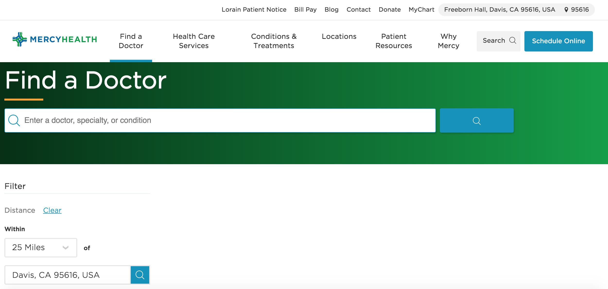
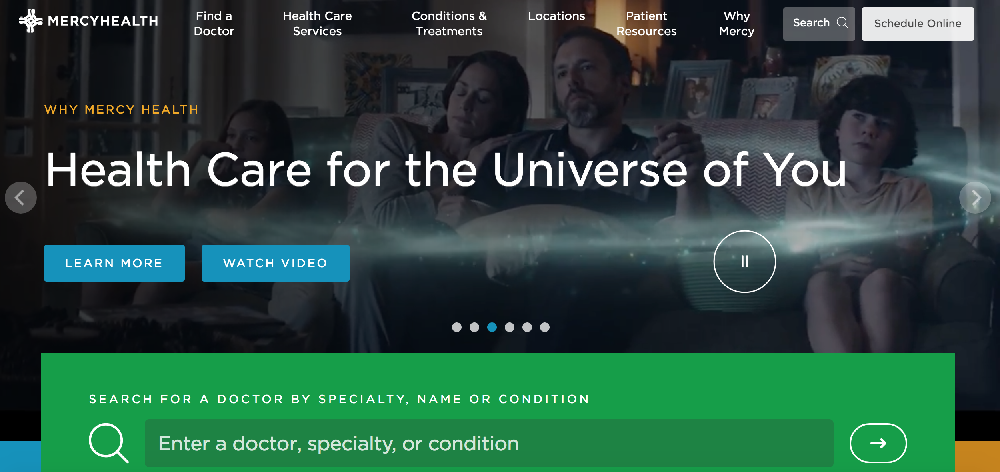
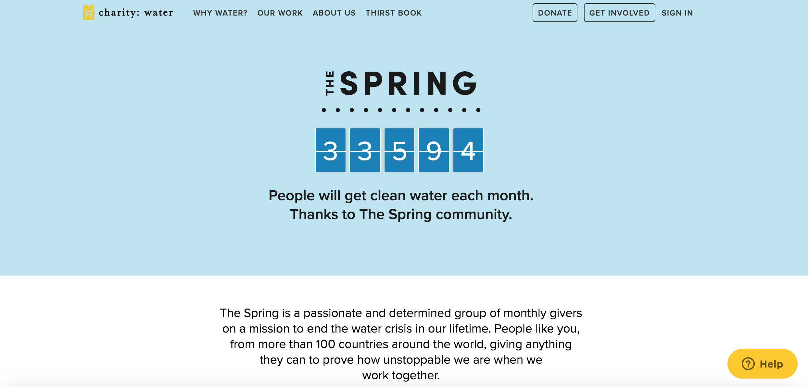

The Mercy Health website uses interactive design to make finding a doctor and scheduling an appointment quick and easy for patients. The home page contains a slideshow of photos and videos in order to comfort and relate to users and patients. On the home page there are also large, clear sections that allow visitors to easily find what they need. The simplicity and intuitiveness of the home page helps users feel supported by their health care team. So many health related websites are outdated and not user-friendly. The Mercy Health website, however, is modern, straight-forward, and above all, helpful.
Another significant aspect of the Mercy Health website is the page that allows patients to search for and find health care practitioners based on their location. Once the user clicks on the page, the website asks to access their location. If the user clicks ‘allow’ then the website will automatically enter the location and search for doctors in the area. If the user chooses not to share their location, they will have the option to manually enter their address and zip code. The user is also able to control how many miles from their location they would like to search.
The Mercy Health site also allows patients to view conditions that the hospital treats and and the treatments that they offer. In addition, there is a list of doctors that are available to meet with patients. Website users can make online appointments or call and schedule an appointment over the phone.
Overall, the Mercy Health website uses interactive design in order to put their patients first. The ease of their site increases efficiency and makes life easier for people who should be worried about nothing but their health. From the home page to the doctor locator and contact page, Mercy Health has dedicated time and effort into their website in order to make their patients’ experience a great one.
Charity: Water is an organization that helps to put an end to the water crisis. They help people all over the world gain access to clean water. On the homepage of the Charity: Water website there is a counter that tracks how many people will get clean water each month thanks to the spring community. The counter adjusts based on the number of contributors and the progress that the organization is making in real-time.
The Charity: Water site is designed as a one-page scroll. If you scroll down past the counter at the top of the page you can learn more about the company. There is a video, which gives viewers the option to interact with the website and the information that it offers. Next to the video is a section that prompts users to choose an amount to donate per month. There are predetermined options as well as a space for people to type in a unique amount. This section is very significant because it is simple and flexible yet persuasive. The phrase, “Choose an amount to give”, paired with predetermined dollar amounts may seem pushy, however, it is effective in the sense where it assumes that site viewers will donate. This expectation makes viewers more likely to sign up and interact with the site.
Further down the page is a timeline of water insecurity in the world and how Charity: Water has impacted history. The timeline is accompanied by heartwarming photos of kids and families who use the water that the Charity: Water community works to provide. The timeline is extremely impactful and makes the user feel closer to the issue and more inclined to donate. It is also an effective way to present the information without overwhelming the viewer or packing the page with too much text.